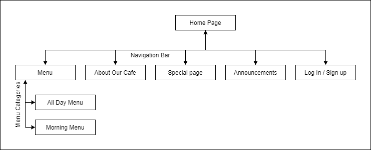

https://sunkissedkitchen.com/gluten-free-donuts/
https://sunkissedkitchen.com/gluten-free-donuts/
Expanding platforms of promotion increases awareness about our business and increases new and repeat customers therefore increasing revenue and the customers satisfaction as they are aware of what we have to offer. We are also looking to expand our client base to entice more families to the cafe and having a website helps promote the cafe and its products to a younger audience.
This is measurable by seeing if the average amount of customers and revenue a (day/week/month) increases after the website is
launched. This will show a combination of how often customers are returning and new customers are coming to the
cafe. We can also evaluate the success by seeing how many customers are signing up for the weekly specials. You
would start looking at the data well before this point minimum 6 months as you want to be able to take the already
increasing customer rate into account before you lunch the website, thus giving you a better look at what the data
after the website launch is telling you by taking out the variable of previous trends. An appropriate amount of revenue for
a business this size would be around $47,000 annual so a reasonable increase just fom the website over the year would be $7,000 increase and the
customer average a week after 6 month should be around 10%.
Another way to track the success of the website is to look at the sign up and sign in feature, as that data will
start at launch
which means no variables of previous trends will influence the date.
Looking at the sign up feature will show how many people are interested in both going to the cafe multiples times
and visiting the site multiple times. The login feature will shows how many people that have previously signed up
and then returned to the website showing how useful the website is amongst those people. It is very hard to gage an reasonable
increase in signups and sign ins as this is dependent on other factors im not aware of.
The last way to see evaluate the success of the site is to look at page views, how many people have viewed the site,
this data cant show how many times one person has viewed the site without implementing javascript tracking like
cookies or Favicon id tracking. What this data will show us is how much traffic the site is receiving and where on
the website there are spending the most time.
To find out how many people have come from the website you will hand out or ask, the survey should contain multiple ways
the website was incorporated and not in the decision to come here, thus giving you the most in depth knowledge. This is needed
as not every one that visits the website will end up coming to the store.
This metric would initially be 0 and then spike once the site is launched but after 3 months the average sit views a day would be around 20.
If the website is successful you will see average amount or customers increase at the cafe and on the website you
should see the average number of views on the site increase along with the number of people signing up and signing
in.
As stated in the Introductory email from client PDF the target audience are family's with the people in the the 18 - 35 range with this information. The fact that this is a cafe with the name "sun and moon cafe" some people will find the name makes them feel like it would be a great place to site and enjoy your surroundings at any time of the day or night as the name of the cafe is one that makes you feel happy and peaceful making it a place that family would like to come as they feel that they would be welcome.
The website aims to gives a clean and sophisticated appearance, with a easy to operate and navigate forefront. Each preview of the meal allows the chance for young children to see what they are ordering before it gets to the table, making it easier for everyone.



{kind=link}
{kind=link}